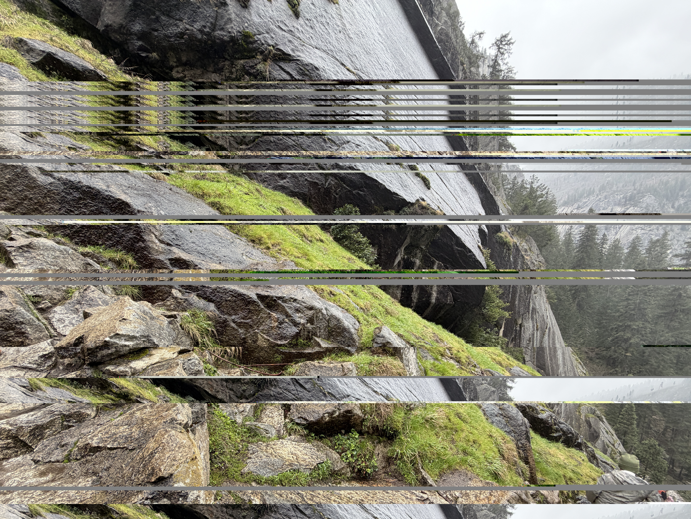
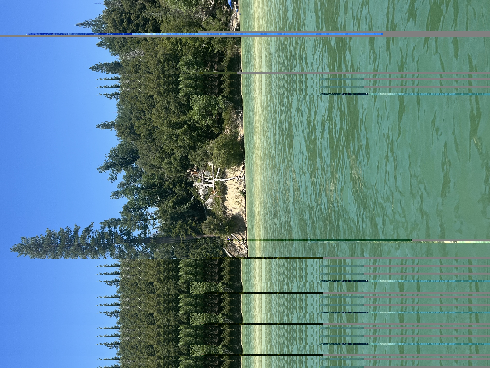

IMAGE_VIEWER.EXE
This is the Audacity project space.
Click on any of the image windows below to maximize them into a full screen preview. This allows a detailed examination of the corrupted data artifacts and glitch structures.

